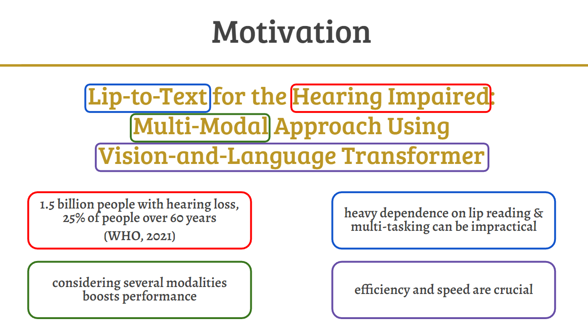
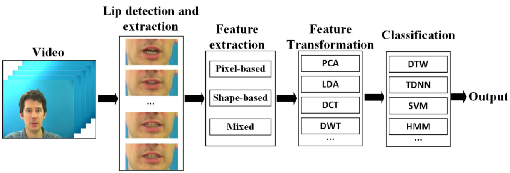
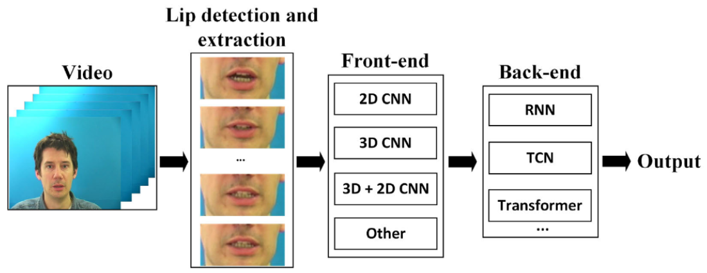
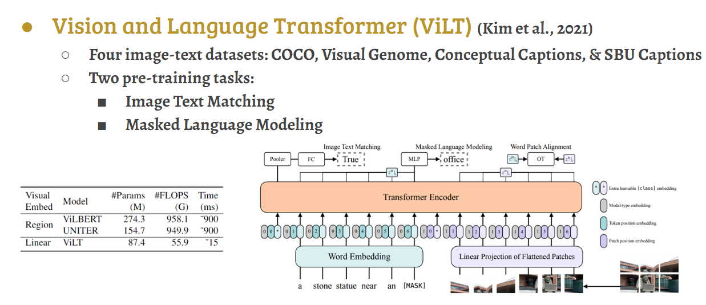
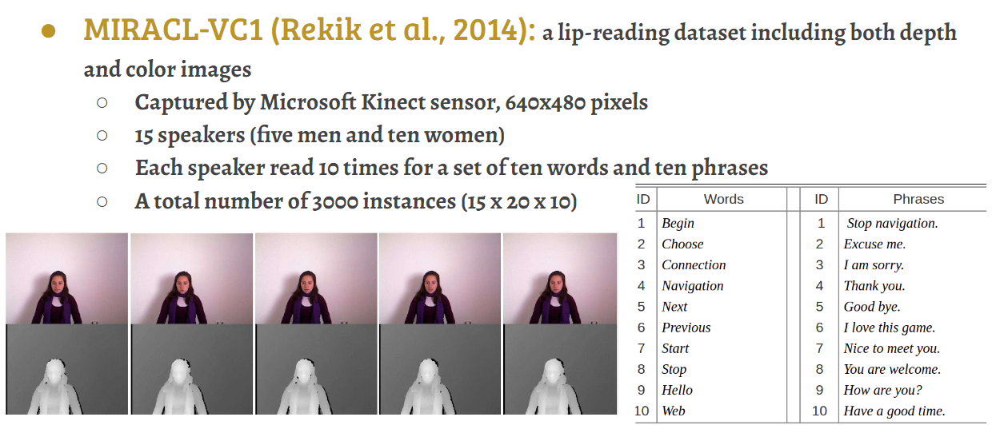
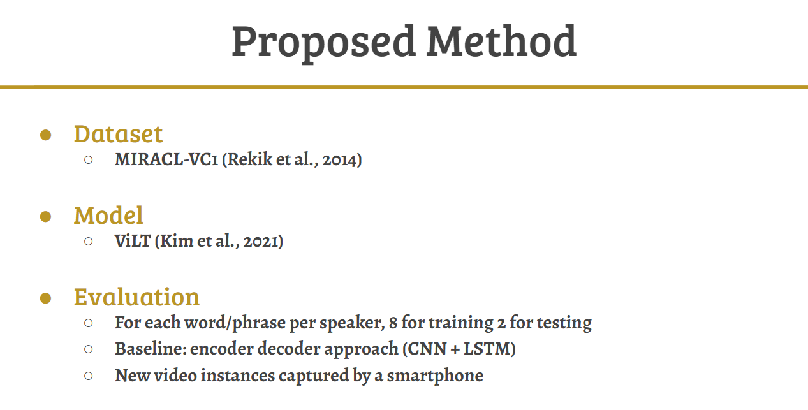
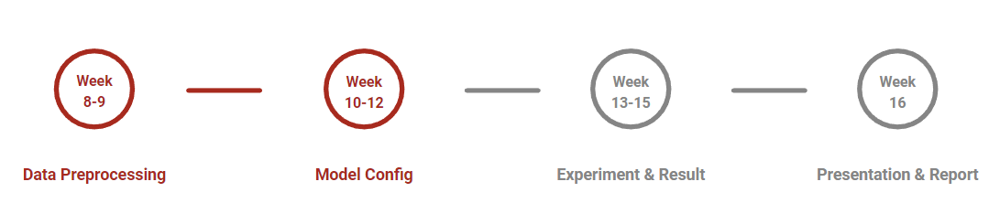

Project Name: Lip-Speech to Text for the Hearing Impaired: Multi-Modal Approach Using Visual-and-Language Transformer
Keywords: Hearing Impaired, Lip Reading, Multi-modal Approach, Vision-and-Language Transformer, Assistive Technology
Abstract: One basic day-to-day activity that is posing real challenges to the hearing impaired is interpersonal communication. In communities without knowledge of sign language, the hearing impaired mainly rely on lip reading, which becomes really impractical whenever multi-tasking is needed. Consequently, we propose a visual-linguistic speech recognition system that can automatically provide the hearing impaired with the text that is being communicated to them. We deploy a minimal vision-and-language-transformer (ViLT) in order to cut down on system computational complexity, thus making sure that the system is better suited for the real-time application. We fine-tune the ViLT model on the MIRACL-VC1 dataset and then evaluate its performance with an encoder-decoder based architecture as the baseline.
Motivation
Related Work: Traditional Lip Reading
Related Work: Deep Lip Reading
Vision-and-Language Transformer
Dataset: MIRACL-VC1
Proposed Method
Equipment List
- Computer
- Smartphone
- Google Colab
Time Plan
Click Here to see the full proposal presentation slides!